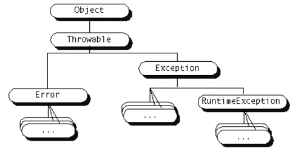

Excepciones e hilos
Excepciones
Las excepciones son eventos que ocurren durante la ejecución de un programa y hacen que éste salga de su flujo normal de instrucciones. Este mecanismo permite tratar los errores de una forma elegante, ya que separa el código para el tratamiento de errores del código normal del programa. Se dice que una excepción es lanzada cuando se produce un error, y esta excepción puede ser capturada para tratar dicho error.
Tipos de excepciones
Tenemos diferentes tipos de excepciones dependiendo del tipo de error que representen. Todas ellas descienden de la clase Throwable, la cual tiene dos descendientes directos:
- Error: Se refiere a errores graves en la máquina virtual de Java, como por ejemplo fallos al enlazar con alguna librería. Normalmente en los programas Java no se tratarán este tipo de errores.
- Exception: Representa errores que no son críticos y por lo tanto pueden ser tratados y continuar la ejecución de la aplicación. La mayoría de los programas Java utilizan estas excepciones para el tratamiento de los errores que puedan ocurrir durante la ejecución del código.
Dentro de Exception, cabe destacar una subclase especial de excepciones denominada RuntimeException, de la cual derivarán todas aquellas excepciones referidas a los errores que comúnmente se pueden producir dentro de cualquier fragmento de código, como por ejemplo hacer una referencia a un puntero null, o acceder fuera de los límites de un array.
Estas RuntimeException se diferencian del resto de excepciones en que no son de tipo checked. Una excepción de tipo checked debe ser capturada o bien especificar que puede ser lanzada de forma obligatoria, y si no lo hacemos obtendremos un error de compilación. Dado que las RuntimeException pueden producirse en cualquier fragmento de código, sería impensable tener que añadir manejadores de excepciones y declarar que éstas pueden ser lanzadas en todo nuestro código. Deberemos:
- Utilizar excepciones no-checked (no predecibles) para indicar errores graves en la lógica del programa, que normalmente no deberían ocurrir.
- Utilizar excepciones checked para mostrar errores que pueden ocurrir durante la ejecución de la aplicación, normalmente debidos a factores externos como por ejemplo la lectura de un fichero con formato incorrecto o un fallo en la conexión.

Dentro de estos grupos principales de excepciones podremos encontrar tipos concretos de excepciones o bien otros grupos que a su vez pueden contener más subgrupos de excepciones, hasta llegar a tipos concretos de ellas. Cada tipo de excepción guardará información relativa al tipo de error al que se refiera, además de la información común a todas las excepciones. Por ejemplo, una ParseException se suele utilizar al procesar un fichero. Además de almacenar un mensaje de error, guardará la línea en la que el parser encontró el error.
Captura de excepciones
Cuando un fragmento de código sea susceptible de lanzar una excepción y queramos tratar el error producido o bien por ser una excepción de tipo checked debamos capturarla, podremos hacerlo mediante la estructura try-catch-finally, que consta de tres bloques de código:
- Bloque try: Contiene el código regular de nuestro programa que puede producir una excepción en caso de error.
- Bloque catch: Contiene el código con el que trataremos el error en caso de producirse.
- Bloque finally: Este bloque contiene el código que se ejecutará al final tanto si se ha producido una excepción como si no lo ha hecho. Este bloque se utiliza para, por ejemplo, cerrar algún fichero que haya podido ser abierto dentro del código regular del programa, de manera que nos aseguremos que tanto si se ha producido un error como si no este fichero se cierre. El bloque finally no es obligatorio ponerlo.
Para el bloque catch además deberemos especificar el tipo o grupo de excepciones que tratamos en dicho bloque, pudiendo incluir varios bloques catch, cada uno de ellos para un tipo/grupo de excepciones distinto. La forma de hacer esto será la siguiente:
try {
// Código regular del programa
// Puede producir excepciones
} catch(TipoDeExcepcion1 e1) {
// Código que trata las excepciones de tipo
// TipoDeExcepcion1 o subclases de ella.
// Los datos sobre la excepción los encontraremos
// en el objeto e1.
} catch(TipoDeExcepcion2 e2) {
// Código que trata las excepciones de tipo
// TipoDeExcepcion2 o subclases de ella.
// Los datos sobre la excepción los encontraremos
// en el objeto e2.
...
} catch(TipoDeExcepcionN eN) {
// Código que trata las excepciones de tipo
// TipoDeExcepcionN o subclases de ella.
// Los datos sobre la excepción los encontraremos
// en el objeto eN.
} finally {
// Código de finalización (opcional)
}
Si como tipo de excepción especificamos un grupo de excepciones este bloque se encargará de la captura de todos los subtipos de excepciones de este grupo. Por lo tanto, si especificamos Exception capturaremos cualquier excepción, ya que está es la superclase común de todas las excepciones.
En el bloque catch pueden ser útiles algunos métodos de la excepción (que podemos ver en la API de la clase padre Exception):
String getMessage() void printStackTrace()
con getMessage obtenemos una cadena descriptiva del error (si la hay). Con printStackTrace se muestra por la salida estándar la traza de errores que se han producido (en ocasiones la traza es muy larga y no puede seguirse toda en pantalla con algunos sistemas operativos).
Un ejemplo de uso:
try {
... // Aqui va el codigo que puede lanzar una excepcion
} catch (Exception e) {
System.out.println ("El error es: " + e.getMessage());
e.printStackTrace();
}
Nunca deberemos dejar vacío el cuerpo del catch, porque si se produce el error, nadie se va a dar cuenta de que se ha producido. En especial, cuando estemos con excepciones no-checked.
Lanzamiento de excepciones
Hemos visto cómo capturar excepciones que se produzcan en el código, pero en lugar de capturarlas también podemos hacer que se propaguen al método de nivel superior (desde el cual se ha llamado al método actual). Para esto, en el método donde se vaya a lanzar la excepción, se siguen 2 pasos:
- Indicar en el método que determinados tipos de excepciones o grupos de ellas pueden ser lanzados, cosa que haremos de la siguiente forma, por ejemplo:
public void lee_fichero()
throws IOException, FileNotFoundException
{
// Cuerpo de la función
}
Podremos indicar tantos tipos de excepciones como queramos en la claúsula throws. Si alguna de estas clases de excepciones tiene subclases, también se considerará que puede lanzar todas estas subclases.
- Para lanzar la excepción utilizamos la instrucción throw, proporcionándole un objeto correspondiente al tipo de excepción que deseamos lanzar. Por ejemplo:
throw new IOException(mensaje_error);
- Juntando estos dos pasos:
public void lee_fichero()
throws IOException, FileNotFoundException
{
...
throw new IOException(mensaje_error);
...
}
Podremos lanzar así excepciones en nuestras funciones para indicar que algo no es como debiera ser a las funciones llamadoras. Por ejemplo, si estamos procesando un fichero que debe tener un determinado formato, sería buena idea lanzar excepciones de tipo ParseException en caso de que la sintaxis del fichero de entrada no sea correcta.
NOTA: para las excepciones que no son de tipo checked no hará falta la cláusula throws en la declaración del método, pero seguirán el mismo comportamiento que el resto, si no son capturadas pasarán al método de nivel superior, y seguirán así hasta llegar a la función principal, momento en el que si no se captura provocará la salida de nuestro programa mostrando el error correspondiente.
Creación de nuevas excepciones
Además de utilizar los tipos de excepciones contenidos en la distribución de Java, podremos crear nuevos tipos que se adapten a nuestros problemas.
Para crear un nuevo tipo de excepciones simplemente deberemos crear una clase que herede de Exception o cualquier otro subgrupo de excepciones existente. En esta clase podremos añadir métodos y propiedades para almacenar información relativa a nuestro tipo de error. Por ejemplo:
public class MiExcepcion extends Exception
{
public MiExcepcion (String mensaje)
{
super(mensaje);
}
}
Además podremos crear subclases de nuestro nuevo tipo de excepción, creando de esta forma grupos de excepciones. Para utilizar estas excepciones (capturarlas y/o lanzarlas) hacemos lo mismo que lo explicado antes para las excepciones que se tienen definidas en Java.
Hilos
Un hilo es un flujo de control dentro de un programa. Creando varios hilos podremos realizar varias tareas simultáneamente. Cada hilo tendrá sólo un contexto de ejecución (contador de programa, pila de ejecución). Es decir, a diferencia de los procesos UNIX, no tienen su propio espacio de memoria sino que acceden todos al mismo espacio de memoria común, por lo que será importante su sincronización cuando tengamos varios hilos accediendo a los mismos objetos.
Creación de hilos
En Java los hilos están encapsulados en la clase Thread. Para crear un hilo tenemos dos posibilidades:
- Heredar de Thread redefiniendo el método run.
- Crear una clase que implemente la interfaz Runnable que nos obliga a definir el método run.
En ambos casos debemos definir un método run que será el que contenga el código del hilo. Desde dentro de este método podremos llamar a cualquier otro método de cualquier objeto, pero este método run será el método que se invoque cuando iniciemos la ejecución de un hilo. El hilo terminará su ejecución cuando termine de ejecutarse este método run.
Para crear nuestro hilo mediante herencia haremos lo siguiente:
public class EjemploHilo extends Thread
{
public void run() {
// Código del hilo
}
}
Una vez definida la clase de nuestro hilo deberemos instanciarlo y ejecutarlo de la siguiente forma:
Thread t = new EjemploHilo(); t.start();
Crear un hilo heredando de Thread tiene el problema de que al no haber herencia múltiple en Java, si heredamos de Thread no podremos heredar de ninguna otra clase, y por lo tanto un hilo no podría heredar de ninguna otra clase.
Este problema desaparece si utilizamos la interfaz Runnable para crear el hilo, ya que una clase puede implementar varios interfaces. Definiremos la clase que contenga el hilo como se muestra a continuación:
public class EjemploHilo implements Runnable
{
public void run() {
// Código del hilo
}
}
Para instanciar y ejecutar un hilo de este tipo deberemos hacer lo siguiente:
Thread t = new Thread(new EjemploHilo()); t.start();
Esto es así debido a que en este caso EjemploHilo no deriva de una clase Thread, por lo que no se puede considerar un hilo, lo único que estamos haciendo implementando la interfaz es asegurar que vamos a tener definido el método run. Con esto lo que haremos será proporcionar esta clase al constructor de la clase Thread, para que el objeto Thread que creemos llame al método run de la clase que hemos definido al iniciarse la ejecución del hilo, ya que implementando la interfaz le aseguramos que esta función existe.
Deberemos utilizar sólo los hilos necesarios. Se utilizarán:
- Cuando la aplicación debe responder a varios eventos simultáneamente.
- Para aumentar la capacidad de respuesta (que se pueda responder al usuario incluso cuando la aplicación esté realizando otras tareas).
- Para aprovechar las máquinas con múltiples procesadores.
Estado y propiedades de los hilos
Un hilo pasará por varios estados durante su ciclo de vida.
Thread t = new Thread(this);
Una vez se ha instanciado el objeto del hilo, diremos que está en estado de Nuevo hilo.
t.start();
Cuando invoquemos su método start el hilo pasará a ser un hilo vivo, comenzándose a ejecutar su método run. Una vez haya salido de este método pasará a ser un hilo muerto.
La única forma de parar un hilo es hacer que salga del método run de forma natural. Podremos conseguir esto haciendo que se cumpla la condición de salida del bucle principal definido dentro del run. Las funciones para parar, pausar y reanudar hilos estás desaprobadas en las versiones actuales de Java.
Mientras el hilo esté vivo, podrá encontrarse en dos estados: Ejecutable y No ejecutable. El hilo pasará de Ejecutable a No ejecutable en los siguientes casos:
- Cuando se encuentre dormido por haberse llamado al método sleep, permanecerá No ejecutable hasta haber transcurrido el número de milisegundos especificados.
- Cuando se encuentre bloqueado en una llamada al método wait esperando que otro hilo lo desbloquee llamando a notify o notifyAll.
- Cuando se encuentre bloqueado en una petición de E/S, hasta que se complete la operación de E/S.

Lo único que podremos saber es si un hilo se encuentra vivo o no, llamando a su método isAlive.
Además, una propiedad importante de los hilos será su prioridad. Mientras el hilo se encuentre vivo, el scheduler de la máquina virtual Java le asignará o lo sacará de la CPU, coordinando así el uso de la CPU por parte de todos los hilos activos basándose en su prioridad. Se puede forzar la salida de un hilo de la CPU llamando a su método yield. También se sacará un hilo de la CPU cuando un hilo de mayor prioridad se haga Ejecutable, o cuando el tiempo que se le haya asignado expire.
Para cambiar la prioridad de un hilo se utiliza el método setPriority, al que deberemos proporcionar un valor de prioridad entre MIN_PRIORITY y MAX_PRIORITY.
Sincronización de hilos
Muchas veces los hilos deberán trabajar de forma coordinada, por lo que es necesario un mecanismo de sincronización entre ellos.
Sección crítica
Hablamos de sección crítica para referirnos al fragmento de código que no debe ser ejecutado por más de un hilo de forma concurrente. Un primer mecanismo de sincronización es la variable cerrojo incluida en todo objeto Object, que permitirá evitar que más de un hilo entre en la sección crítica. Los métodos declarados como synchronized utilizan el cerrojo del objeto al que pertenecen evitando que más de un hilo entre en ellos al mismo tiempo.
public synchronized void seccion_critica()
{
// Código sección crítica
}
También podemos utilizar cualquier otro objeto para la sincronización dentro de nuestro método de la siguiente forma:
synchronized (objeto_con_cerrojo)
{
// Código sección crítica
}
De esta forma estaremos utilizando el cerrojo del objeto especificado. Si dos hilos intentan entrar de forma concurrente en un bloque de código sincronizado con un mismo objeto, el segundo de ellos quedará bloqueado hasta que el primero libere el cerrojo (salga de dicho bloque de código).
Deberemos:
- Utilizar sincronización sólo cuando sea realmente necesario.
- No sincronizar clases que proporcionen datos fundamentales, dejar que el usuario decida cuándo sincronizarlas en sus propias clases
- No sincronizar un método si contiene un número elevado de operaciones que no necesitan sincronización (reorganizar el método en varios, en ese caso). Se trata de minimizar el tiempo de bloqueo de hilos a lo estrictamente necesario
- Las asignaciones simples de tipos de datos se garantiza que serán atómicas (o se completan o se quedan como al principio). No es necesario sincronizarlas, sólo se sincronizarán cuando haya varias asignaciones seguidas que sean interdependientes
Espera y notificación
Además podemos hacer que un hilo quede bloqueado a la espera de que otro hilo lo desbloquee cuando suceda un determinado evento. Para bloquear un hilo usaremos la función wait, para lo cual el hilo que llama a esta función debe estar en posesión del monitor, cosa que ocurre dentro de un método synchronized, por lo que sólo podremos bloquear a un proceso dentro de estos métodos.
Para desbloquear a los hilos que haya bloqueados se utilizará notifyAll, o bien notify para desbloquear sólo uno de ellos aleatoriamente. Para invocar estos métodos ocurrirá lo mismo, el hilo deberá estar en posesión del monitor.
Cuando un hilo queda bloqueado liberará el cerrojo para que otro hilo pueda entrar en la sección crítica y desbloquearlo.
Deberemos utilizar notifyAll sólo cuando los hilos estén esperando por varias condiciones, o cuando varios hilos puedan seguir ejecutando a partir de dicho notifyAll. Para lo demás, utilizar notify, porque es más eficiente.
Esperar la finalización de un hilo
Por último, puede ser necesario esperar a que un determinado hilo haya finalizado su tarea para continuar. Esto lo podremos hacer llamando al método join de dicho hilo, que nos bloqueará hasta que el hilo haya finalizado.
Grupos de hilos
Los grupos de hilos nos permitirán crear una serie de hilos y manejarlos todos a la vez como un único objeto. Si al crear un hilo no se especifica ningún grupo de hilos, el hilo creado pertenecerá al grupo de hilos por defecto.
Podemos crearnos nuestro propio grupo de hilos instanciando un objeto de la clase ThreadGroup. Para crear hilos dentro de este grupo deberemos pasar este grupo al constructor de los hilos que creemos.
ThreadGroup grupo = new ThreadGroup("Grupo de hilos");
Thread t = new Thread(grupo,new EjemploHilo());